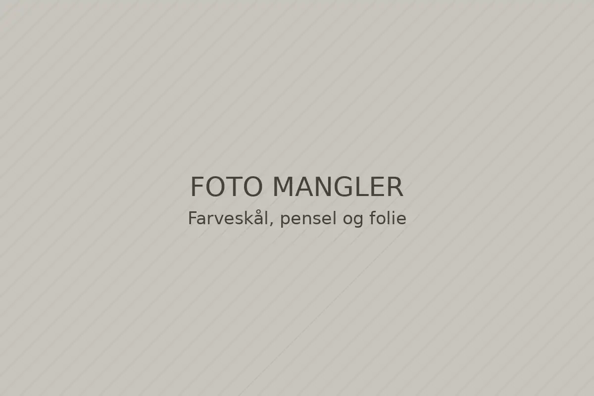

Forside / Behandlinger og priser
Behandlinger og priser
Alle priser er med vask og styling, medmindre andet står. Du kan booke det hele online og se varigheden, før du vælger tid.

Godt at vide
Før du kommer
Første farve
Første gang tager vi ti minutter til at se på håret og tale om farven. Det er med i tiden.
Flyt eller aflys
Brug linket i din bekræftelsesmail. Salonen får automatisk besked om ændringen.
Betaling
Du betaler i salonen, når du er færdig. Vi tager kort og MobilePay.
Klar til at booke?
Vælg behandling og frisør, og se de ledige tider de næste to uger.